HondaConnect / HMI + Companion App
A more connected
way to ride.
A Team Bravo concept exploring how the Honda Rebel 500 display and a companion app can support new riders before, during, and after a ride.
Research & UI design contribution
I primarily contributed to research and supported parts of the UI design. The work shown here is the team’s shared output.
Team Bravo · SCAD
SDES 495 + UXDG 315
Independent redesign concept
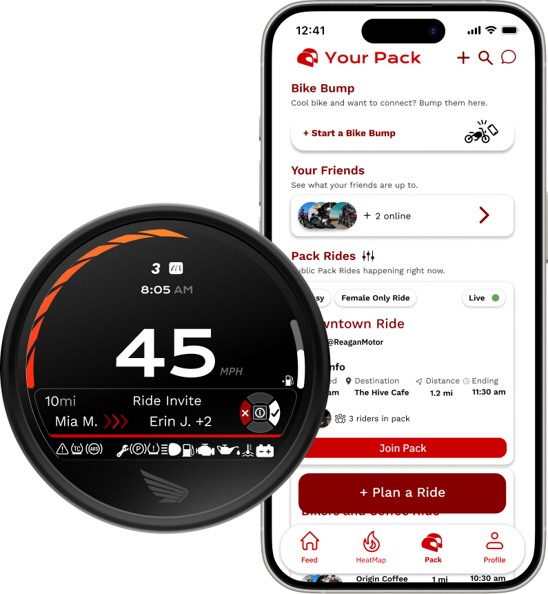
01 / Research
Start with the riding context.
The team visited dealerships to understand the physical display, riding posture, and handlebar controls. These observations informed a focus on essential information and short interactions.
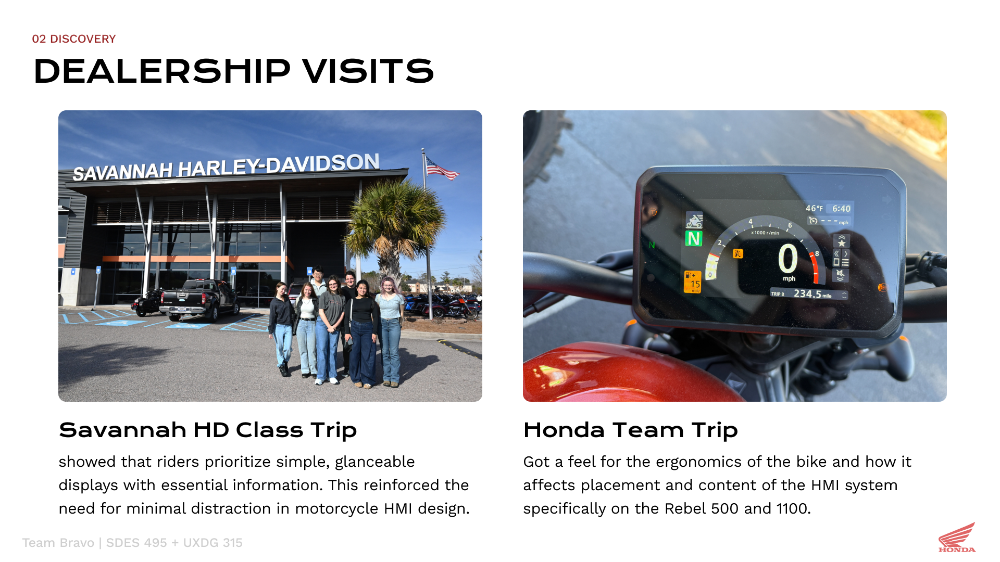
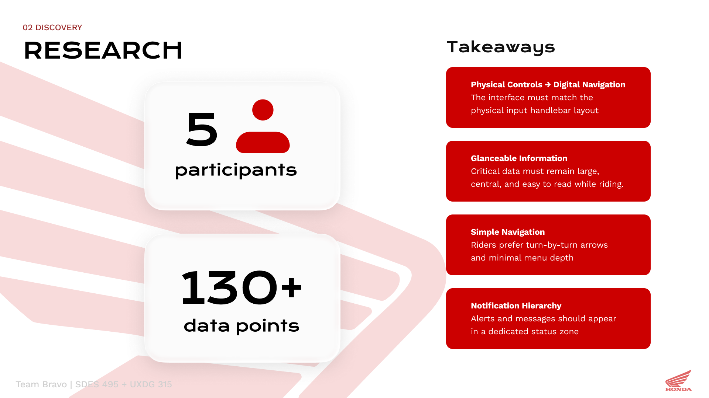
Study figures shown in the presentation refer to the team’s shared research.
02 / Experience concept
One journey, two interfaces.
The companion app supports planning and rider connection, while the motorcycle HMI carries relevant information into the ride. Pack Mode, a community heatmap, Bike Bump, and assistance requests form the concept’s connected experience.
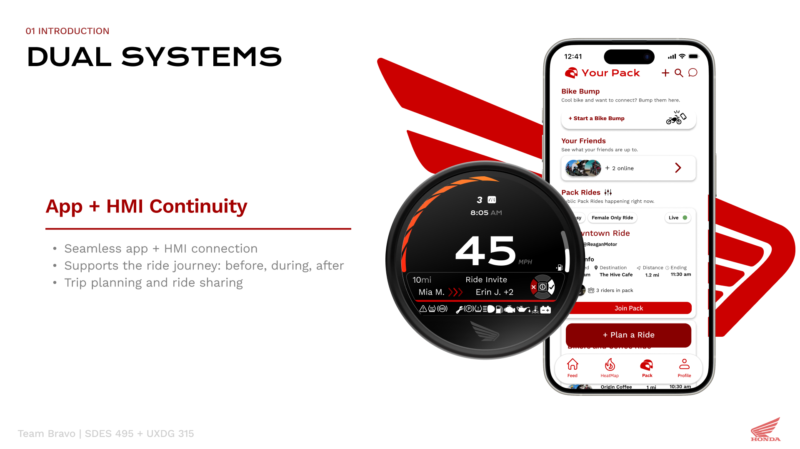
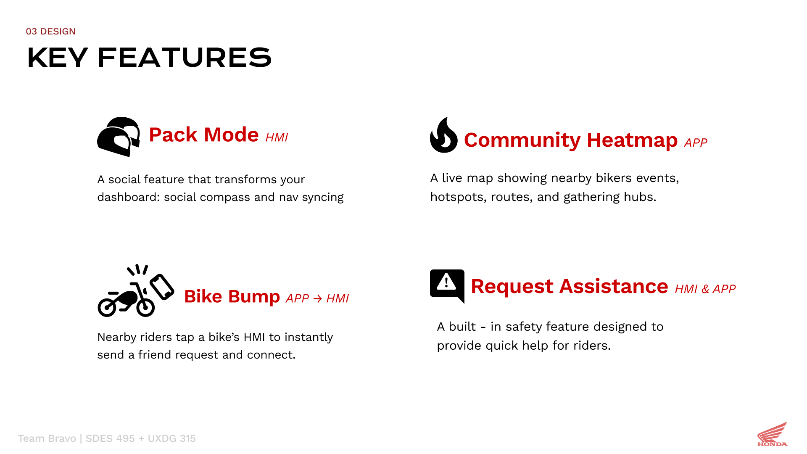
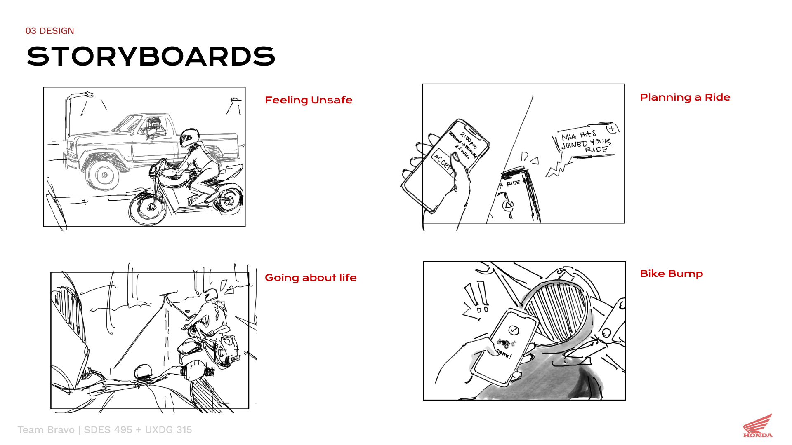
03 / Interface exploration
Make the round display work as a system.
The mid-fidelity exploration brought home, menu, navigation, vehicle status, and Pack Mode into the same circular format. Seeing the screens together made their information hierarchy and navigation relationships explicit.
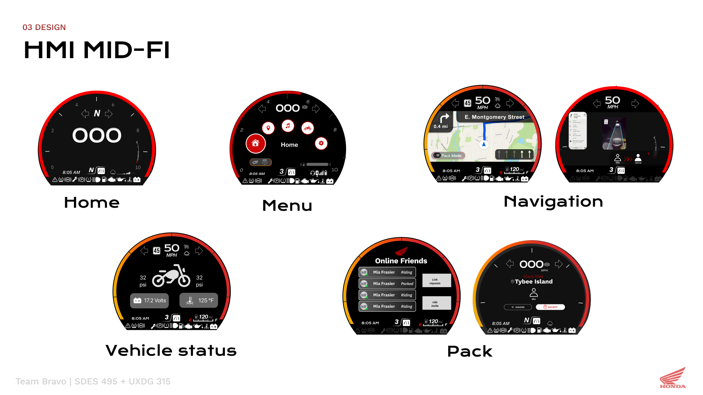
04 / Design decisions
Show what changed, and why.
Two refinements explain how the team simplified the concept: returning map controls to a D-pad, and moving media into the trip window to give Pack Mode its own page.
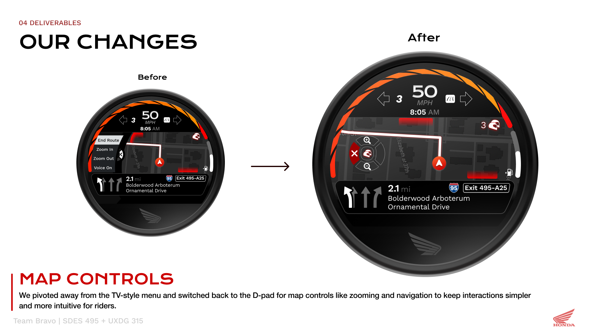
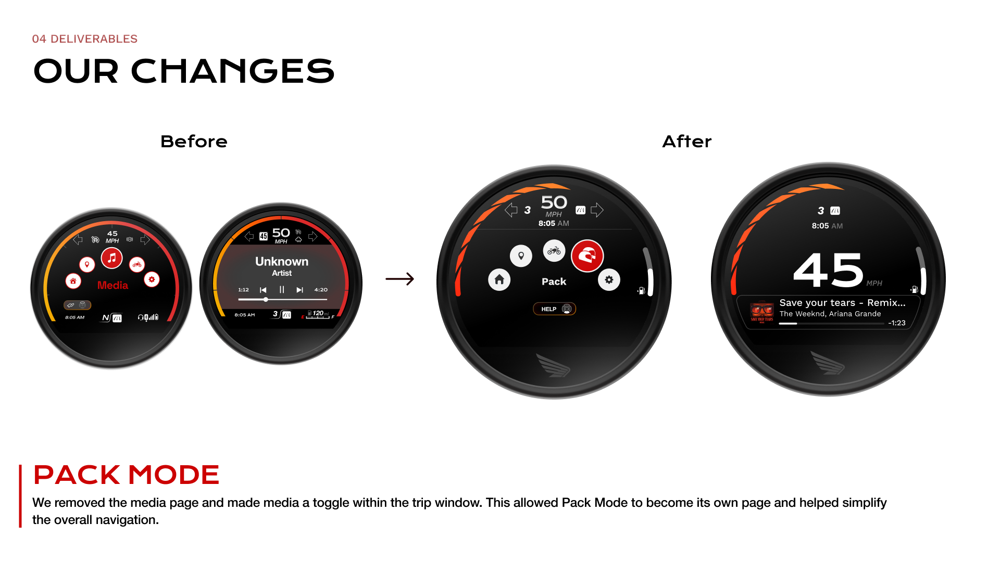
05 / Final interface
Keep useful information within reach.
The high-fidelity direction carries a trip information area across screens, with a separate visual treatment for incoming notifications. The following boards show the intended interface behavior rather than measured usability outcomes.
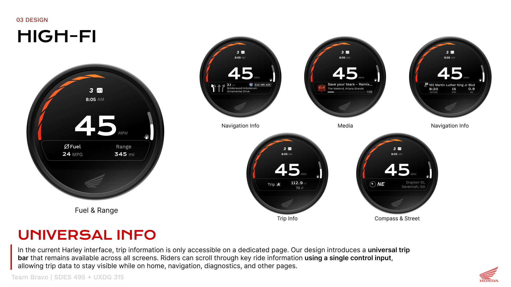
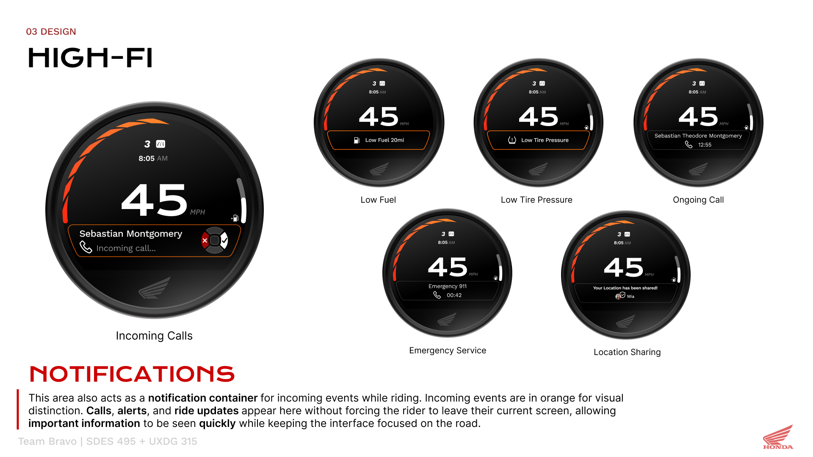
06 / Connected riding
Bring the group into the ride.
Active Pack Mode shows the number of riders in the group and a compass overlay indicating their direction. The D-pad can toggle the overlay while the route remains visible.
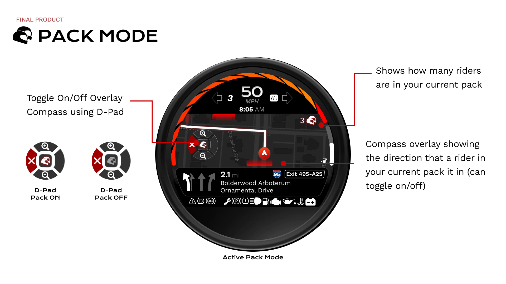